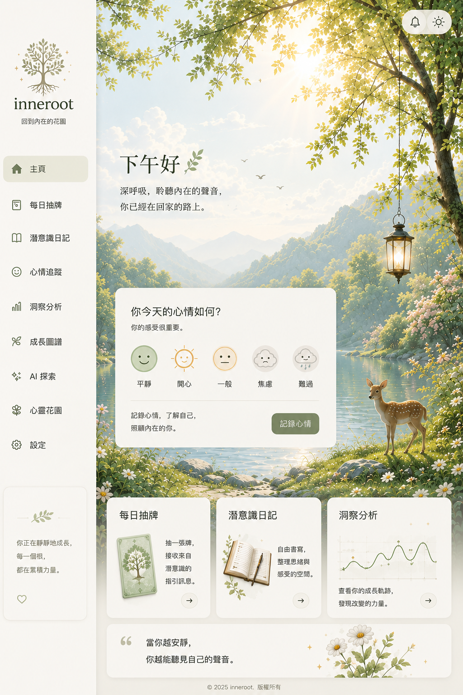

♧
inneroot
回到內在的花園
⚙︎
WELCOME HOME
下午好，Bee
深呼吸，聆聽內在的聲音。
你已經在回家的路上。
你今天的心情如何？
你的感受很重要。
記錄
☺
平靜
☀
開心
—
一般
☁
焦慮
☂
難過
✦
每日抽牌
接收今天的內在指引
→
▧
潛意識日記
寫低此刻感受
✣
AI 探索
整理今天的內在訊息
⌁
洞察分析
看見重複出現的模式
❋
心靈花園
收藏你的內在種子
「當你越安靜，你越能聽見自己的聲音。」
⌂
首頁
✦
抽牌
▧
日記
✣
AI 探索
×